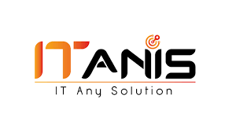

Stage de Fin d’Études – ITANIS
Période : Février 2025 – Mai 2025
Objectif : Développement d’une plateforme web de suivi technique des agents, intégrant la gestion du temps, des tâches et la géolocalisation.
Outils : React, Spring Boot, SQL Server
Stage d’Été – Comptoir Hammami
Période : Juillet 2024
Objectif : Développement d’une application web pour la gestion d’un parc automobile, permettant le suivi des performances et l’optimisation des coûts.
Outils : Symfony, GitHub, XAMPP
Stage d’Été – AMI Assurance
Période : Juillet 2023
Objectif : Enregistrement et traitement des constats dans le service sinistres, saisie précise des données et suivi administratif.
Outil : Excel